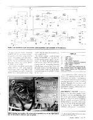
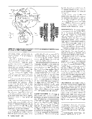
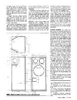
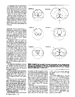
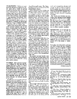
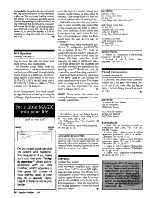

Published in Speaker Builder magazine ONE/89 (Jan-Feb 1989).
Youcan add this design to your “gee whiz” stack of novelty speakers (Photo1). It is based on the M-S (middle-side) stereo mic'ing technique, which is popular for many reasons, but few people seem to understand how this method realizes stereo signals.
The secret with the singular stereo speaker I designed is that the front driver receives the sum of the left and right channels, and the difference is sent to the rear drivers, which are wired out-of-phase, like the M-S microphone (see “Theory”). My original belief was that the left and right channel program material would hover to the left and right of the speaker, but no such luck. I've discovered it's similar to Lauridsen's method (Fig.1) for producing pseudo-stereo from a mono source1which my speaker does with some success. However, my single speaker does have an incredible sense of depth.
The M-S is my first and only speaker construction project and I continue to startle friends with the sound.
ORIGINAL DESIGN. I came up with the design in 1983, reflecting that I was rarely positioned front and center while listening to my stereo system, but either working on some project, homework, cleaning or cooking, and not positioned optimally to hear the stereo image, often being in the next room. My design produces the same acoustic energy as standard stereo, and since I am generally economical, I figured I shouldn't pay for more speakers than I absolutely needed. For normal stereo I'd just wear headphones.
I started this project just prior to subscribing to Speaker Builder. I'd never built any kind of furniture and most of the electronic projects I'd ever finished were kits. I modified my original design as my reading and building experience progressed.
DRIVER SELECTION. I chose drivers only by specs, reputation, and by listening to similar drivers. These weren't my first choices, and in some cases the third or fourth choice, due to availability at the time.
The “front”drivers use a standard three-way design with a Thiele/Small aligned enclosure. The recommended enclosure specifications were supplied by the retailer (McGee Radio & Electronics), which I found very useful and fit closely with Bullock and White's BOXRESPONSE program.2,3

The crossover is a stock second-order design, rated at 150W, with crossover frequencies of 500Hz and 7kHz. I chose a wide midrange bandwidth because the PMT51 has a much greater power rating (120W) than the other drivers do (85W and 50W, respectively).
For the rear drivers, I tried full-range Philips AD5061/M8, but they were not of high enough quality, power, or sensitivity. An album of Carmina Burana, with its lush chorus, has so much out-of-phase material I was getting distortion from the amp trying to drive them, and the small speakers were bottoming out. I replaced them with two of the same dome midrange drivers PMT51) I used for the front.
In my enthusiasm while choosing the drivers, I'd somehow lost the idea of keeping the cost down. I was learning how much is involved to make a good sounding speaker an excellent sounding speaker. Changing the rear drivers and adding adjustable L-pads to the more efficient front midrange and tweeter were two major changes.
ELECTRONIC CIRCUIT. I naively tried to come up with a passive design to achieve the sum and difference, but this would have caused a tremendous signal loss. The active circuit I designed (Fig. 2) is simple and anyone with a little knowledge of op amps could design one. The op amp can be any good quality device that is unity-gain stable or stabilized with proper compensation. The design works well and parts are readily available (all can be found at a Radio Shack).

I used a pre-made RadioShack IC experimenter's board (Photo2 and Fig. 3) for the project. The “difference” circuit in the Photo has about 10dB of gain (330kΩ feedback resistor on IC1c) because the rear drivers on my speaker are wired in series. I suggest you wire in parallel and keep the gain at unity as in the schematic, depending on the load your own power amp can handle. This is one likely cause of the amp's clipping distortion when I was using the AD5061s.
The circuit can be powered by any power supply giving ±6–18v, or by two or four 9v batteries. D'Appolito's power supply is suitable also (SB 4/88, p. 20).6Be sure not to connect power to the ICs backwards, or this will fry them.
Use metal film resistors for lowest noise. I originally used carbon resistors, but I did hand match the values of the resistors around each op-amp to 0.1%. The circuit adds noise to my system, but it is below all my program material sources (LPs, FM stereo, my own reel-to-reel, and digital masters).
The circuit associated with IC2 can be eliminated altogether if you know the output of the device feeding it, and the connecting lines are short enough (less than 2 feet). Inverting amplifiers should be isolated from the “outside world” by a non-inverting buffer (IC2c, IC2d; Fig. 2). In the schematic, the section within the dotted line is shown in the photo, the rest of the circuit is on the original EQ board. The input buffers are identical to the ones on the EQ board. I picked up the signal after the input buffer on the EQ board and returned it to the same point after the cut in the trace. If you're unsure where the output of the sum/difference circuit will be connected, include the 100Ω resistors and 1μF capacitor.
BASSIC CONCERNS. An advantage of this speaker is the summed version of the bass is the actual program material (see “LP Mastering”). Turntable rumble tends to be out-of-phase, which cancels itself in the front driver and remains in the rear where it can't be heard. This does eat up your system headroom, though, and should be filtered out. I use the matrix circuit in a tape loop, instead of between the pre-amp and power amp, with the left channel as the front and the right as the rear. This allows me to use the right channel bass control to cut the out-of-phase turntable rumble and control the balance between the front and rear drivers.
In the original circuit, I added two parallel 0.03μF capacitors to the output of the difference amp (0.06μF to help roll off the bass. Calculations show the circuit to be 3dB down at 27Hz when feeding a 100kΩ load. The resistance and capacitance can be slightly smaller, depending on the desired low rolloff.
CONSTRUCTION. The speaker cabinet is constructed of 3/4-inch particleboard (Fig.4). I've included the entire blueprint so you can compare my actual design with my description of the sound. I attached the corners with Elmer's glue and counter-sunk cabinet screws. I added cleats later, after tests with the woofer installed indicated air leaks. I lined the interiors with fiberglass. I mounted all the drivers with bathroom silicone sealant.
I designed a square port because the area required would have been an unusual diameter. I've since learned the port can be almost any diameter with a corresponding change in port length.7
The upper chambers were for the original 5-inch full-range drivers.
Initially I thought the speaker would sound best in a corner. This improved the bass response but gave the ambient rear signal a constrained character. The“stereo” image is much wider against a flat wall. I chose a 30° angle for the drivers so they wouldn't be pointed directly into the walls of a corner or, conversely, be too close to the line of sight on the sides mounted perpendicular to the front drivers. I soldered all the electrical connections within the enclosure with 16-gauge stranded wire.
LISTENING IN. This speaker seems to work best with any source material that has major program material coming equally and in-phase from the left and right channels (panned center). This includes M-S mic'ing, stereo trio mic'ing, or pop music where leads and bass are panned hard center, and backgrounds and effects are left and right. This creates a halo of sound around the center, letting the more expensive drivers handle the important part of the sound. Changing the rear drivers to PMT51s subjectively improves the overall frequency response and seems to give a more even sense of depth, possibly because the front and rear drivers are more closely matched.

One problem with playback of recordings made with wider spaced microphones: more out-of-phase material is present (see “Theory”). When the level is balanced between the front and rear, the front drivers will sound weak. If the-front level is increased, the image sounds restrained.
Even though the direct sound from the rear drivers wraps around directly to the front, a greater spaciousness is apparent when the speaker sits farther from a wall or corner. Besides the initial direct sound, you hear reflections from more distant walls and surfaces in the room.
THEORY. I prefer minimal mic'ing, like a stereo pair with no highlight mikes, for recording classical ensembles. I've also heard of jazz bands that are recorded with just a stereo trio (left-center-right, LCR). Even with minimal stereo mic'ing, differences in sound can be great, particularly recordings of classical music in a concert hail, caused by different stereo mic'ing techniques, but different musicians and halls add variables, also.
In designing sound for live theater (sound effects, music and live mic'ing), I know speakers and their placement must fit the mic'ing techniques used to record the effects or music. I've seen SBarticles on driver and speaker design, but nothing on the program material they reproduce. Let's review the many different ways sound is recorded, and presented in the home; you can adapt my speaker design, or any other design, accordingly.
STEREO MIC'ING. Two audio cues help us perceive direction between two loudspeakers: relative intensity, which is the most significant and relative arrival time. The sound will appear to come completely from the right speaker when the intensity of the right channel is 20dB greater or the arrival time is 2msec sooner than the left. This time difference is also known as the precedence or Haas effect.8 Lowering the level in the right speaker about 8–10dB, while delaying the left up to about 25ms will keep the stereo image centered, but will broaden the image between the speakers proportional to the amount of delay.9 Beyond 25ms you start to hear a distinct echo.
Different stereo mic'ing techniques, such as X-Y, ORTF,10 Blumlein,11 and M-S, use coincident (one microphone directly on top of the other), slightly spaced, and widely spaced pairs; and trios.
Slightly spaced pairs use both time delay (the Haas effect) and level differences to give localization. Widely spaced pairs generally use omni-directional (equal pickup in all directions) mikes, therefore only the Haas effect produces localization. The time delay is created by the distance between the two mikes, most apparent with sound coming from the sides.
Coincident mic'ing uses only level differences for localization because there is no delay between mikes for sound traveling from the sides.

Music in a studio is generally recorded with a large number of single mikes and each is assigned a position in the stereo image by panning or adjusting only the relative level between the two channels. Signal delay is used only as an effect, that is, reverberation, echo, flanging, and chorusing.
Middle-Side. TheM-S method uses a coincident pair, however one is a cardioid pick up pattern mike pointed directly toward the ensemble (middle), and the other is a perpendicular (side-to-side) figure-eight pickup pattern mike (Figs. 5a and 5b); the positive lobe is usually pointed to the left.
The electronic matrix isa simple sum and difference, unity gain mixer. The sum of the two mic's is panned hard left and the difference is panned hard right. Varying the level between the two microphones allows you to adjust the width of the stereo image (Figs. 5c–f). The points where the microphone pickups are equal, or where their pattern lines cross, indicate where a musician would be positioned to be heard from the left or right speaker. The negative rear lobes which result from combining the two mike signals, put some reverberation out-of-phase in the stereo signal, so the reverberation seems to come from outside the normal stereo stage between the speakers.
The closer the microphone elements are matched, the clearer the stereo image; the best results are obtained with stereo microphone where the elements are factory matched.
Inverting the phase of one microphone will cause the left and right signals to exchange outputs. This is handy if you accidentally place the figure-eight mike backward or hang the stereo mike upside down.
M-S stereo (or other coincident techniques) is also perfectly mono compatible. When you add left and right channels together, the figure-eight sides cancel, leaving only the middle cardioid mike signal, as if only one mike was used. Commercial FM radio also uses this matrix to broadcast in stereo and be mono compatible. M-S recordings are more likely to broadcast unscathed.
My M-S speaker matrix circuit can also be used for the M-S microphone matrix. The signal from the microphones must go through an appropriate mike pre-amp before going through this matrix. This design is too noisy for professional applications, though. If there's a demand I'll make a more esoteric design available, but the corresponding parts may be hard to find. In addition, I suggest you read Walt Jung'sAudio IC Op-Amp Applications.12
X-Y mic'ing can sometimes suffer from a “hole in the middle” effect. Performers situated at the center of the microphones are off-axis from both, and the recording sounds different than the live performance. One cure for this hole is to add a third, center mike with its signal going equally to both the left and right channels.
M-S mic'ing doesn't suffer from this problem; the middle element is pointed toward the center. Both M-S and stereo trio mic'ing have the advantage of three on-axis directions, giving a much more pleasant recording of the concert hall sound. While M-S requires only two microphones or one stereo mike, it does require the electronic matrix. Even though Blumlein's method has four on-axis directions, a soloist is still off-axis from both microphones. Interestingly, performers tend to prefer M-S, while engineers prefer ORTF.13

Left and right (lateral) stylus motion is center program material, and up and down (vertical) motion is out-of-phase or ambient material. The popular Neumann system has switchable turnover frequencies of 150Hz and 300Hz.14, 15
Even on CDs, because of the mic'ing techniques and LP engineering habits, the low-frequency information tends to be the same in both channels. In regular stereo (or PA setups, for that matter), out-of-phase bass will sound weak for the same amount of program power. Still, I prefer stereo using two woofers. Recordings are likely to be monitored and adjusted with two equally full-range speakers and then checked on one full-range speaker for mono compatibility, rather than on an odd stereo setup with different frequencies getting a different number of speakers. Boosting the bass of the front driver of my M-S speaker at all frequencies below that of the rear drivers (about 300Hz with the PMT51s) takes care of this consideration, but is not a perfect solution.
TV STEREO. Many movies are broadcast or released on video tape with the original surround encoding of a Dolby stereo optical print. The two-channel recording is decoded to four channels (Dolby started by using a technique similar to the Sansui QS quadraphonic matrix16) but, instead of speakers in the four corners of a room, the new format specifies three speakers across the front-left, center, and right; the surround channel is the fourth.
Soundtracks must pinpoint information across the front and keep the center material in the center because phantom center material of two-channel stereo drifts toward you if you sit at the sides of a listening space. The closest speaker is louder and its sound arrives sooner. This is not as big a problem in the home, though dialogue and effects in stereo television shows are kept fairly close to center in the stereo field to keep the sound of the on-screen action from running off the small screen. The 70mm, six-track stereo format does not use this encode/decode process.
When a theatrical show is mixed, the dialogue program material is always given to the center channel; never panned from speaker to speaker. Through psychoacoustics (the study of how people perceive sound), movement, even following the characters across a screen, was found to be distracting. Panning is only used for an effect, On the set, a shotgun or other narrow pattern microphone records the action and dialogue. If a stereo recorder is used, one track gets the main mix and the other is used for backup-rarely a stereo mix. Replaced dialogue is recorded mono and effects are recorded mono and stereo. Room tone and other atmospherics may be recorded in stereo after the main “take.” On the simplest stereo shows, only the music is stereo.
The surround channel also has a very limited bandwidth, 500Hz–7kHz.17 (Matching these frequencies with the front crossover of my speaker was unintentional.) Surround information is kept to a minimum for compatibility with mono-only theater systems. Any bass information comes only from the front speakers. The 7kHz low-pass filter keeps distracting optical noise out of the surrounds. You can design your own home surround speakers with a limited bandwidth, also.
The simplest surround decoder takes the left and right recorded signals (left total and right total) and sends them to the left and right speakers; makes a sum and sends it to the center speaker; and takes the difference signal and sends that to the surrounds. At the other end of the spectrum, professional theater decoders use a complex phase detection, steering circuitry and surround-channel delay to increase separation between speakers. Home units fall somewhere in-between. Interestingly, M-S recorded material is easily encoded and decoded through the Dolby process. The middle mike is sent to the center speaker, matrixed left and right to the left and right speakers, and the surrounds are fed by the figure-eight mike (which picks up mostly reverberation).
This mix type works well with my M-S speaker. It's great for television or stereo video, since sound effects tend to run off the picture with a normal stereo setup. For movie theater systems, recordings are mixed with the left and right speaker behind the screen, not on each side. With the M-S speaker, the action takes place in the center, and the music and atmospherics take place all around. As with the M-S microphone, the M-S speaker has a direct center element so center program material has an actual driver and not a phantom combination of other elements to produce the sound.
My 13-inch color television sits comfortably on my speaker, but the magnets in the speaker cause the color to change. The sky turns red, grass turns yellow, and faces turn green. I stacked three large phone books under the television and this works fine. If you're going to add this speaker to your television, be sure to include magnetic shielding.
OTHER IDEAS. The left and right signals don't recombine on the left and right sides of the speaker because of many inaccuracies, such as diffraction problems from the recessed front panel, and drivers not vertically aligned. I've come up with a few possible cures you might try, also, the best application I've thought of for this design: a “ghetto-blaster.”

To calculate rough delay times for most situations, I use as a rule of thumb one foot per millisecond; thus estimating sound travel at 1000ft./sec. Sound actually travels a little faster: in dry air at 32°F (0°C), 1087ft/s (331m/s); and at 68°F (20°C), 1130ft/s (343m/s).19 This is about 73.7–76.3 μsec/in.
Driver Considerations. You could vertically align the front drivers by moving the midrange, high-frequency and rear drivers to the top of a woofer cabinet in a triangle configuration, or three sides of a square. This brings them to a near coincident position without adding delay.
Wall reflections from the rear drivers may be more desirable than sound that wraps around from the sides by diffraction. Cone midrange drivers rather than dome types may work better for this. Also, cabinet designs to isolate the direct sound from the rear drivers may be necessary.
I thought about using electrostatic panels in a “T” configuration (an ES-T?) The top or bottom of the “T” could be pointed toward the listener. Adding delay to the front driver would make the drivers effectively coincident. Could changing the delay of whichever panel is in front affect how the phantom left and right channels are beamed into the listening room?20 Should the back be covered by sound absorbing material?21
I no longer have access to a wood shop to try these ideas so I'm turning my many questions over to you. I've started with my design and the theory behind it, and you can experiment to your heart's delight. Have fun.
NOTE. Please contact the author concerning licensing arrangements for commercial manufacture. (How arrogant! RAW 2/21/2000)
ABOUT THE AUTHOR
Reid Woodbury is a freelance audio-for-video (sweetening) engineer in Los Angeles, working with sound for TV and film, and has done sound designs for various live theaters in the US. He graduated from the University of Missouri at Kansas City Conservatory of Music and also studied two years of electrical engineering. He recorded recitals, concerts and radio programs for the Missouri Repertory Theater and the Conservatory's recording department, and currently runs his own location classical recording service.
FIGURE1: Lauridsen's method for pseudo-stereo (from Sound Recording, p. 74).
PHOTO1: Beauty shot of finished speaker.
PARTS LIST
Misc.: hardware, screws, nuts, spacers, bipolar power supply or batteries, box, RCA input and output connectors.
FIGURE2: Sum and difference circuit with low rolloff. Labels in parentheses mark connections for M-S microphone.
PHOTO2: Finished board installed in EQ enclosure with an unstuffed board, foil side. Signal hook-up wires are two-conductor shielded (left, right, and ground).
FIGURE3: M-S circuit pattern and component layout. Resistors are rectangular and capacitors are oval. All resistors are 100k except whore marked.
FIGURE4: Blueprint of enclosure. Panels were cut from 3/4-inch particle board.
FIGURE5: Cardioid (M) and figure-eight (S) microphone pickup patterns and their resulting matrixed patterns (L and R). Drawings are on a linear scale. The dotted arrow is the “on-axis” direction of the right matrix output. The solid arrow is the performer's physical direction from the mikes, to be heard only from the right speaker in standard stereo.
1. Eargle, John, Sound Recording, Van Nostrand Reinhold Co., New York, 1980, pp. 73–79.
2. Bullock, Robert M., and Bob White, “BoxResponse,” SB 1/84, pp. 13–18, 42.
3. I took the Bullock and White program and typed it into a powerful spreadsheet program that has built-in graphing (Excel for the Macintosh). I've spent many hours subtly changing a speaker enclosure's parameters with a particular driver and studying the numbers and frequency response graphs. I modified the input of the program, i.e., instead of entering the compliance/box volume ratio, I enter just the box volume and the spreadsheet calculates the ratio. I enlarged my enclosure slightly and I always use the 30Hz rumble filter in my pre-amp as the program suggests.
4. McGee Radio & Electronics Corp. Catalog, Kansas City, MO, 1983.
5. Pennington, Terry, and Larry Winter, “Understanding Circuit Principles,” Recording Engineer/Producer, March 1987, pp. 60–65.
6. D'Appolito, Joseph and James W. Bock, “The Swan IV SpeakerSystem,” SB 4/88, pp. 9–21.
7. Bullock, Robert M., and Bob White, “BoxResponse,” SB 1/84, pp. 13–18, 42.
8. db: The Sound Engineering Magazine Dec. 1979, pp. 42–46.
9. Eargle, John, Sound Recording, Van Nostrand Reinhold Co., New York, 1980, pp. 41–42.
10. ORTF is a microphone setup specified by the French Broadcasting Organization where two cardioid mikes are at a 110° angle and 17cm apart.
11. Blumlein or “stereosonic” mic'ing uses two coincident figure-eight mikes at a 90° angle.
12. Jung, Walt, Audio IC Op-Amp Applications, 3rd ed., Howard W. Sams & Co., Indianapolis, IN, 1987.
13. Cross, Lowell, “…Assessments of Studio Microphones,” Recording Engineer/Producer April 1984, pp. 120-129, and Dec. 1985, pp. 70–85.
14. Runstein, Robert E., Modern Recording Techniques, Howard W. Sams & Co., Inc., Indianapolis, IN, 1974, p. 300.
15. Eargle, John, Sound Recording, Van Nostrand Reinhold Co., New York, 1980, p. 298.
16. Blake, Larry, “Mixing Dolby Stereo Film Sound,” Recording Engineer/Producer, Feb. 1981.
17. Blake, Larry, “Mixing Techniques for Dolby Stereo Film and Video Releases,” Recording Engineer/Producer, June 1985, pp. 94–107.
18. Rumreich, Mark, “Electronic Time Delay Line for Speakers,” SB3/88, pp. 15–21, 67.
19. Halliday, David, and Robert Resnick, Fundamentals of Physics, John Wiley & Sons Inc., New York, 1981, p. 319.
20. Williamson, Reg, “The Quad 63,” SB 1/82, pp. 10–18.
21. Cox, Thomas, “Spot Sound Absorption,” SB 3/88, pp. 40–43.
ACKNOWLEDGMENTS
Thanks to Ray Taylor for the photography, my mom for makin' me do good English, and the University of Missouri at Kansas City Conservatory of Music Recording Department for the space to try out my crazy ideas.